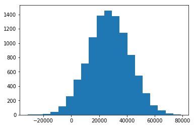

In [157]: from apyori import apriori
In [158]: dataset = pd.read_csv('Market_Basket_Optimisation.csv', header = None)
Traceback (most recent call last):
File "<ipython-input-158-a2fbc5eeb39a>", line 1, in <module>
dataset = pd.read_csv('Market_Basket_Optimisation.csv', header = None)
NameError: name 'pd' is not defined
In [159]:
In [159]: import pandas as pd
In [160]: dataset = pd.read_csv('Market_Basket_Optimisation.csv', header = None)
In [161]: transactions = []
In [162]: for i in range(0, 7501):
...: transactions.append(list(dataset.values[i])) #this one is more efficient
...: #transactions.append([str(dataset.values[i,j]) for j in range(0, 20)])
In [163]: 3*7.0/7501
Out[163]: 0.0027996267164378083
In [164]: rules = apriori(transactions, min_support = 0.004, min_confidence = 0.25, min_lift = 4)
In [165]: results = list(rules)
Traceback (most recent call last):
File "<ipython-input-165-adec728339f0>", line 1, in <module>
results = list(rules)
File "apyori.py", line 283, in apriori
transaction_manager = TransactionManager.create(transactions)
File "apyori.py", line 121, in create
return TransactionManager(transactions)
File "apyori.py", line 44, in __init__
self.add_transaction(transaction)
File "apyori.py", line 57, in add_transaction
self.__transaction_index_map[item].add(self.__num_transaction)
KeyboardInterrupt
In [166]:
In [166]: import pandas as pd
...:
...: # Data Preprocessing
...: dataset = pd.read_csv('Market_Basket_Optimisation.csv', header = None)
...:
...:
...:
...: transactions = []
...:
...: for i in range(0, 7501):
...: #transactions.append(list(dataset.values[i])) #this one is more efficient
...: transactions.append([str(dataset.values[i,j]) for j in range(0, 20)])
In [167]: from apyori import apriori
...: rules = apriori(transactions, min_support = 0.004, min_confidence = 0.25, min_lift = 4)
...:
...: # Visualising the results
...: results = list(rules)
In [168]: results[0]
Out[168]: RelationRecord(items=frozenset(['chicken', 'light cream']), support=0.004532728969470737, ordered_statistics=[OrderedStatistic(items_base=frozenset(['light cream']), items_add=frozenset(['chicken']), confidence=0.29059829059829057, lift=4.84395061728395)])
In [169]: results[1]
Out[169]: RelationRecord(items=frozenset(['pasta', 'escalope']), support=0.005865884548726837, ordered_statistics=[OrderedStatistic(items_base=frozenset(['pasta']), items_add=frozenset(['escalope']), confidence=0.3728813559322034, lift=4.700811850163794)])
In [170]: from sklearn.datasets import load_iris
In [171]: iris = load_iris()
In [172]: import numpy as np
In [173]: import numpy as np
In [174]: incomes = np.random.normal(27000, 15000, 10000)
In [175]: np.mean(incomes)
Out[175]: 27087.345890203262
In [176]: np.median(incomes)
Out[176]: 27059.387523848367
In [177]: np.std(incomes)
Out[177]: 14912.265235526525
In [178]: import matplotlib.pyplot as plt
...: plt.hist(incomes, 20)
...: plt.show()

In [179]: plot = plt.boxplot(incomes)
In [180]: fliers = plot['fliers']
In [181]: flier
Traceback (most recent call last):
File "<ipython-input-181-61158cb02309>", line 1, in <module>
flier
NameError: name 'flier' is not defined
In [182]:
In [182]: fliers
Out[182]: [<matplotlib.lines.Line2D at 0x1810ecfbd0>]
In [183]: for fly in fliers:
...: print fly
...:
Line2D(_line6)
In [184]: for fly in fliers:
...: print fly.get_data()
...:
(array([ 1., 1., 1., 1., 1., 1., 1., 1., 1., 1., 1., 1., 1.,
1., 1., 1., 1., 1., 1., 1., 1., 1., 1., 1., 1., 1.,
1., 1., 1., 1., 1., 1., 1., 1., 1., 1., 1., 1., 1.,
1., 1., 1., 1., 1., 1., 1., 1., 1., 1., 1., 1., 1.,
1., 1., 1., 1., 1., 1., 1., 1., 1., 1., 1., 1., 1.,
1., 1., 1., 1., 1., 1., 1.]), array([-22939.73799092, -14778.26719943, -16063.70080501, -20794.25817878,
-22298.64660894, -17574.43946554, -14440.73430738, -13928.61236535,
-14666.6279927 , -28280.54136244, -16604.19879416, -18288.18875406,
-16379.20951451, -13140.03240778, -13395.33330173, -14110.36995703,
-18631.52499842, -21636.15286507, -27705.28044704, -18674.08256 ,
-21526.87353047, -14084.53502172, -13180.24969347, -18475.98843043,
-13119.89889847, -21381.22639288, -25951.45888598, -22059.66921102,
-14039.55620746, -16498.33504357, -13971.92403503, -14461.74341444,
-15420.8822961 , -17410.02031665, -21979.40205284, -17282.15785846,
-31380.65334698, -13950.68750137, -17549.08597328, -19248.95169432,
70160.47556268, 71414.8973937 , 68715.82787921, 78844.9462452 ,
70354.63282757, 70631.34833046, 68701.70392748, 69018.72001567,
67329.78073047, 69397.68032167, 68551.81229756, 71913.87995547,
70820.36565356, 68423.90344546, 75956.36175339, 73533.28879359,
71129.6589803 , 76766.71056827, 67776.6498762 , 77238.71575245,
75729.14739468, 67538.71577017, 76199.29555706, 69489.24112029,
70841.10329813, 68457.13849519, 71871.83151243, 67398.9920798 ,
74443.32671863, 71396.89710781, 76805.89997211, 68201.04549888]))
In [185]: fdata[0][0]
Traceback (most recent call last):
File "<ipython-input-185-65206d5ca875>", line 1, in <module>
fdata[0][0]
NameError: name 'fdata' is not defined
In [186]:
In [186]: fdata = fly.get_data()
In [187]: fdata[0][0]
Out[187]: 1.0
In [188]: fdata[0][-1]
Out[188]: 1.0
In [189]: fdata[1][0]
Out[189]: -22939.737990917289
In [190]: fdata[1][-1]
Out[190]: 68201.045498875174
In [191]: for fly in fliers:
...: fdata = fly.get_data()
...: fly.set_data([fdata[0][0],fdata[0][-1]],[fdata[1][0],fdata[1][-1]])
In [192]: for fly in fliers:
...: print fly.get_data)_
File "<ipython-input-192-d0e2f1301afd>", line 2
print fly.get_data)_
^
SyntaxError: invalid syntax
In [193]:
In [193]: for fly in fliers:
...: print fly.get_data()
...:
([1.0, 1.0], [-22939.737990917289, 68201.045498875174])
In [194]: plot = plt.boxplot(incomes)
...:
...: fliers = plot['fliers']
In [195]: for fly in fliers:
...: print fly.get_data()
...:
(array([ 1., 1., 1., 1., 1., 1., 1., 1., 1., 1., 1., 1., 1.,
1., 1., 1., 1., 1., 1., 1., 1., 1., 1., 1., 1., 1.,
1., 1., 1., 1., 1., 1., 1., 1., 1., 1., 1., 1., 1.,
1., 1., 1., 1., 1., 1., 1., 1., 1., 1., 1., 1., 1.,
1., 1., 1., 1., 1., 1., 1., 1., 1., 1., 1., 1., 1.,
1., 1., 1., 1., 1., 1., 1.]), array([-22939.73799092, -14778.26719943, -16063.70080501, -20794.25817878,
-22298.64660894, -17574.43946554, -14440.73430738, -13928.61236535,
-14666.6279927 , -28280.54136244, -16604.19879416, -18288.18875406,
-16379.20951451, -13140.03240778, -13395.33330173, -14110.36995703,
-18631.52499842, -21636.15286507, -27705.28044704, -18674.08256 ,
-21526.87353047, -14084.53502172, -13180.24969347, -18475.98843043,
-13119.89889847, -21381.22639288, -25951.45888598, -22059.66921102,
-14039.55620746, -16498.33504357, -13971.92403503, -14461.74341444,
-15420.8822961 , -17410.02031665, -21979.40205284, -17282.15785846,
-31380.65334698, -13950.68750137, -17549.08597328, -19248.95169432,
70160.47556268, 71414.8973937 , 68715.82787921, 78844.9462452 ,
70354.63282757, 70631.34833046, 68701.70392748, 69018.72001567,
67329.78073047, 69397.68032167, 68551.81229756, 71913.87995547,
70820.36565356, 68423.90344546, 75956.36175339, 73533.28879359,
71129.6589803 , 76766.71056827, 67776.6498762 , 77238.71575245,
75729.14739468, 67538.71577017, 76199.29555706, 69489.24112029,
70841.10329813, 68457.13849519, 71871.83151243, 67398.9920798 ,
74443.32671863, 71396.89710781, 76805.89997211, 68201.04549888]))
In [196]: for fly in fliers:
...: fdata = fly.get_data()
...: fly.set_data([fdata[0][0],fdata[0][-1]],[fdata[1][0],fdata[1][-1]])
In [197]: [item.get_ydata()[0] for item in plot['whiskers']]
Out[197]: [17077.092052838234, 37174.497067117336]
In [198]: import pandas as pd
...: _, bp = pd.DataFrame.boxplot(pd.DataFrame(incomes), return_type='both')
In [199]: outliers = [flier.get_ydata() for flier in bp["fliers"]]
In [200]: outliers
Out[200]:
[array([-22939.73799092, -14778.26719943, -16063.70080501, -20794.25817878,
-22298.64660894, -17574.43946554, -14440.73430738, -13928.61236535,
-14666.6279927 , -28280.54136244, -16604.19879416, -18288.18875406,
-16379.20951451, -13140.03240778, -13395.33330173, -14110.36995703,
-18631.52499842, -21636.15286507, -27705.28044704, -18674.08256 ,
-21526.87353047, -14084.53502172, -13180.24969347, -18475.98843043,
-13119.89889847, -21381.22639288, -25951.45888598, -22059.66921102,
-14039.55620746, -16498.33504357, -13971.92403503, -14461.74341444,
-15420.8822961 , -17410.02031665, -21979.40205284, -17282.15785846,
-31380.65334698, -13950.68750137, -17549.08597328, -19248.95169432,
70160.47556268, 71414.8973937 , 68715.82787921, 78844.9462452 ,
70354.63282757, 70631.34833046, 68701.70392748, 69018.72001567,
67329.78073047, 69397.68032167, 68551.81229756, 71913.87995547,
70820.36565356, 68423.90344546, 75956.36175339, 73533.28879359,
71129.6589803 , 76766.71056827, 67776.6498762 , 77238.71575245,
75729.14739468, 67538.71577017, 76199.29555706, 69489.24112029,
70841.10329813, 68457.13849519, 71871.83151243, 67398.9920798 ,
74443.32671863, 71396.89710781, 76805.89997211, 68201.04549888])]
In [201]: boxes = [box.get_ydata() for box in bp["boxes"]]
In [202]: boxes
Out[202]:
[array([ 17077.09205284, 17077.09205284, 37174.49706712, 37174.49706712,
17077.09205284])]
In [203]: medians = [median.get_ydata() for median in bp["medians"]]
In [204]: medians
Out[204]: [array([ 27059.38752385, 27059.38752385])]
In [205]: whiskers = [whiskers.get_ydata() for whiskers in bp["whiskers"]]
In [206]: whiskers
Out[206]:
[array([ 17077.09205284, -12904.5146432 ]),
array([ 37174.49706712, 67255.91177243])]
In [207]: incomes = np.random.normal(27000, 15000, 10000)
...: np.mean(incomes)
...: np.median(incomes)
...: np.std(incomes)
...:
...: #We can segment the income data into 50 buckets, and plot it as a histogram:
...:
...: import matplotlib.pyplot as plt
...: plt.hist(incomes, 20)
...: plt.show()
In [208]: plot = plt.boxplot(incomes)
In [209]: import pandas as pd
...: _, bp = pd.DataFrame.boxplot(pd.DataFrame(incomes), return_type='both')
...:
...: outliers = [flier.get_ydata() for flier in bp["fliers"]]
...: boxes = [box.get_ydata() for box in bp["boxes"]]
...: medians = [median.get_ydata() for median in bp["medians"]]
...: whiskers = [whiskers.get_ydata() for whiskers in bp["whiskers"]]
In [210]: outliers
Out[210]:
[array([-13059.04461544, -19206.58877575, -15870.27787278, -13285.7887499 ,
-20577.56700113, -15126.33625998, -13487.51067942, -15584.55121403,
-15703.80909104, -13194.35107007, -13440.47620875, -13204.51178254,
-14762.16994358, -16317.28861587, -18141.9340329 , -18808.85729199,
-14499.82852911, -19103.16631947, -14302.51605583, -13316.49011845,
-15210.71807402, -14945.29791805, -22918.04403927, -21595.43142272,
-21807.57288889, -18910.79801456, -25208.31596064, -16524.50847351,
-13018.37853416, -16952.81493089, -14863.99882462, -13913.03481777,
-15438.62018716, -16551.36991905, -20963.83316507, -15693.87686318,
-14577.73892357, -14762.00983837, 70069.89175892, 71457.27558201,
69818.09129027, 72080.30021228, 74634.01580203, 74658.33087479,
74832.71726306, 69399.29173644, 68429.51824486, 74232.16702313,
71175.71306584, 85349.09818057, 67549.76524577, 72350.64118696,
69983.44497153, 74487.7623019 , 71631.3153194 , 70827.79908192,
83633.56413635, 81737.82438237, 70926.76411508, 69948.62177836,
72759.49128428, 70599.64602161, 67673.48280923, 68026.31134463,
89831.27706219, 71215.00615394, 83595.58053916, 66997.56205494,
71464.16092689, 70971.10232803, 67626.38647434, 67141.16035388,
67962.584331 , 76316.42716747, 68103.49612717, 78822.53854749,
70432.8776859 , 83259.15767119, 72638.62201997, 74622.97091187,
72548.59622893])]
In [211]: boxes
Out[211]:
[array([ 16989.71552448, 16989.71552448, 36946.22904939, 36946.22904939,
16989.71552448])]
In [212]: medians
Out[212]: [array([ 27027.51568701, 27027.51568701])]
In [213]: whiskes
Traceback (most recent call last):
File "<ipython-input-213-5218973b5fcf>", line 1, in <module>
whiskes
NameError: name 'whiskes' is not defined
In [214]:
In [214]: whiskers
Out[214]:
[array([ 16989.71552448, -12731.99900189]),
array([ 36946.22904939, 66849.81207622])]
In [215]: